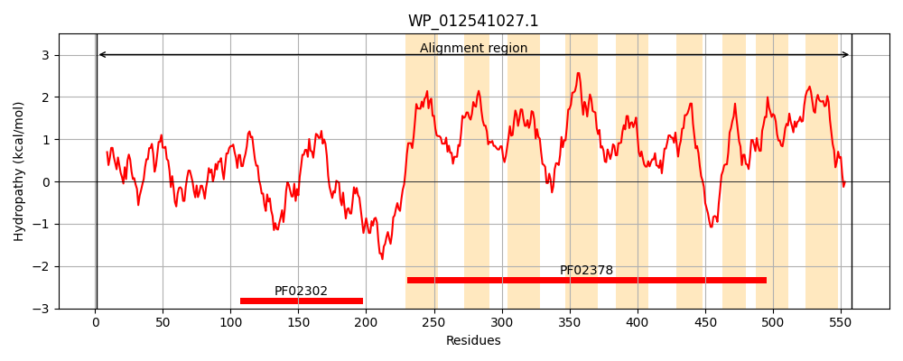
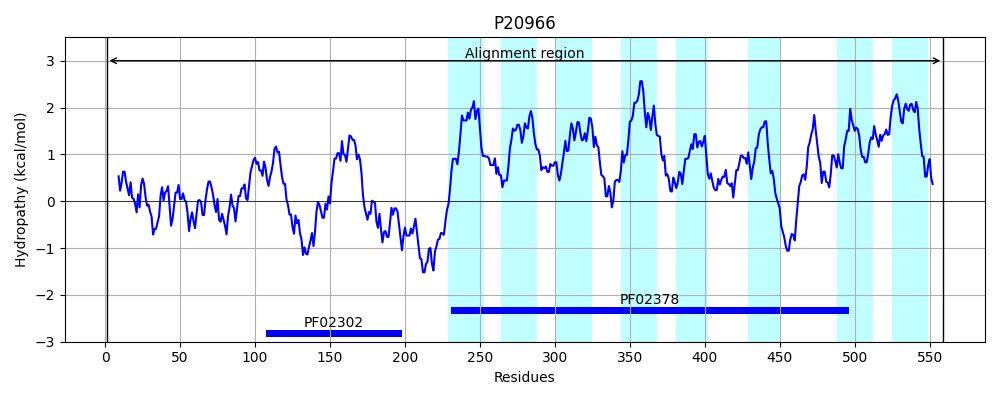
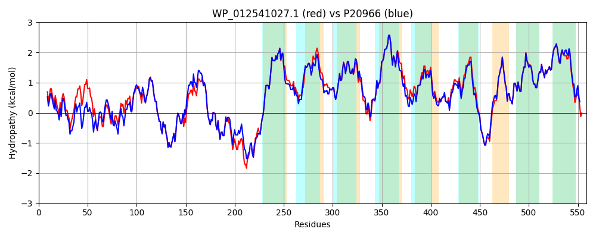

Hit Accession: P20966
Hit TCID: 4.A.2.1.1
Hit Description: gnl|BL_ORD_ID|9343 gnl|TC-DB|P20966|4.A.2.1.1 PTS SYSTEM, FRUCTOSE-SPECIFIC IIBC COMPONENT (EIIBC-FRU) (FRUCTOSE- PERMEASE IIBC COMPONENT) (PHOSPHOTRANSFERASE ENZYME II, BC COMPONENT) (EC 2.7.1.69) (EII-FRU) - Escherichia coli.
Mach Len: 559
e:0.000000
Query TMS Count : 9
Hit TMS Count: 8
TMS-Overlap Score: 8.650000
Predicted Substrates:CHEBI:5172;fructose
BLAST Alignment:
Score: 2506 , Bit scores: 969 bits, E-value: 0.0e+00, Alignment length: 559, Percentage identity: 89
Query: 1 MKTLLIIDAGLGQARAYMAKTLLGAAAPKAHLELIDNPNDAELVIVLGAALPTDSALNGKQVYLGDINRAVAHPELFLSEAKGHATPYAAPAAAAVPAATGGPKRIVAVTACPTGVAHTFMAAEAIETEAKKRGWWVKVETRGSVGAGNAITPEEVAEADLVIVAADIEVDLAKFAGKPMYRTTTGLALKKTAQELDKAVAEAKPYQPSGKPQAAG-EGKKESAGAYRHLLTGVSYMLPMVVAGGLCIALSFAFGIKAFEVKDTLAAALMQIGGGSAFALMVPVLAGFIAFSIADRPGLTPGLIGGMLAVSGGSGFIGGIIAGFLAGYVAKAISTKLKLPQSMEALKPILIIPLVSSLIVGLAMIYLIGKPVAGILAWLTHWLQTMGTANAVLLGAILGAMMCTDMGGPVNKAAYAFGVGLLSTQTYAPMAAIMAAGMVPPLAMGIATLVARNKFDKGQREGGKAALVLGLCFISEGAIPFAARDPMRVLPCCIVGGAVTGAISMAIGAKLMAPHGGLFVLLIPGAITPVLGYLLAIVAGTLVAGLSYAVLKRPEAQVV 558
MKTLLIIDA LGQARAYMAKTLLGAAA KA LE+IDNPNDAE+ IVLG ++P DSALNGK V+LGDI+RAVAHPELFLSEAKGHA PY AP AA P A GPKR+VAVTACPTGVAHTFMAAEAIETEAKKRGWWVKVETRGSVGAGNAITPEEVA ADLVIVAADIEVDLAKFAGKPMYRT+TGLALKKTAQELDKAVAEA PY+P+GK Q A E KKESAGAYRHLLTGVSYMLPMVVAGGLCIALSFAFGI+AF+ TLAAALMQIGGGSAFALMVPVLAG+IAFSIADRPGLTPGLIGGMLAVS GSGFIGGIIAGFLAGY+AK IST+LKLPQSMEALKPILIIPL+SSL+VGLAMIYLIGKPVAGIL LTHWLQTMGTANAVLLGAILG MMCTDMGGPVNKAAYAFGVGLLSTQTY PMAAIMAAGMVPPLAMG+AT+VAR KFDK Q+EGGKAALVLGLCFISEGAIPFAARDPMRVLPCCIVGGA+TGAISMAIGAKLMAPHGGLFVLLIPGAITPVLGYL+AI+AGTLVAGL+YA LKRPE V
Sbjct: 1 MKTLLIIDANLGQARAYMAKTLLGAAARKAKLEIIDNPNDAEMAIVLGDSIPNDSALNGKNVWLGDISRAVAHPELFLSEAKGHAKPYTAPVAATAPVAASGPKRVVAVTACPTGVAHTFMAAEAIETEAKKRGWWVKVETRGSVGAGNAITPEEVAAADLVIVAADIEVDLAKFAGKPMYRTSTGLALKKTAQELDKAVAEATPYEPAGKAQTATTESKKESAGAYRHLLTGVSYMLPMVVAGGLCIALSFAFGIEAFKEPGTLAAALMQIGGGSAFALMVPVLAGYIAFSIADRPGLTPGLIGGMLAVSTGSGFIGGIIAGFLAGYIAKLISTQLKLPQSMEALKPILIIPLISSLVVGLAMIYLIGKPVAGILEGLTHWLQTMGTANAVLLGAILGGMMCTDMGGPVNKAAYAFGVGLLSTQTYGPMAAIMAAGMVPPLAMGLATMVARRKFDKAQQEGGKAALVLGLCFISEGAIPFAARDPMRVLPCCIVGGALTGAISMAIGAKLMAPHGGLFVLLIPGAITPVLGYLVAIIAGTLVAGLAYAFLKRPEVDAV 559 | Protein Hydropathy Plots: |
|---|
|  |  |
Pairwise Alignment-Hydropathy Plot:
|
|---|
|  |